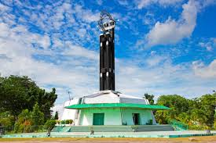
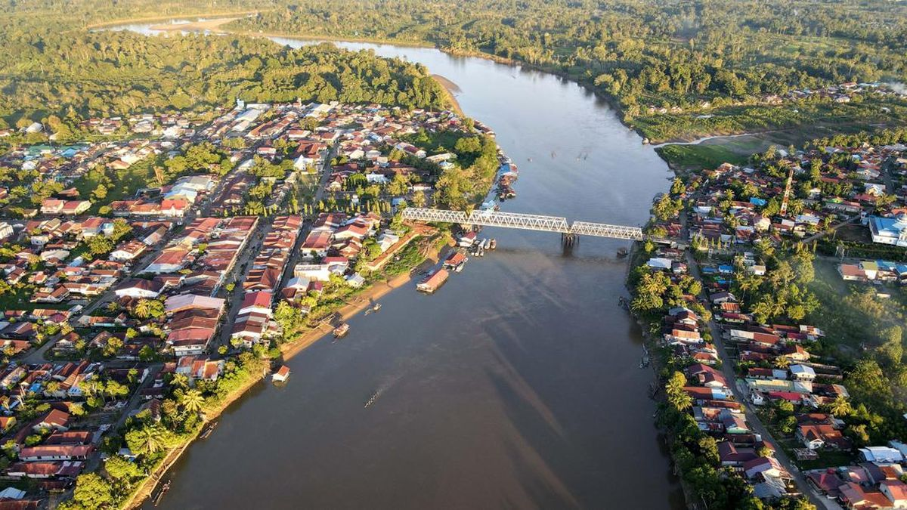
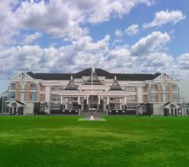
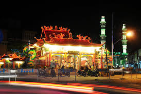
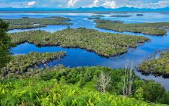

Destinasi Populer
Pilih Destinasi Anda

Pusat KotaTugu Khatulistiwa
Landmark paling ikonik Pontianak. Tepat di 0° Lintang, fenomena kulminasi terjadi 21-23 Maret & 21-23 September.
 Warisan
Warisan
Keraton Kadriyah
Istana Kesultanan Pontianak didirikan Sultan Syarif Abdurrahman Al-Qadrie tahun 1771. Museum budaya Melayu hidup.

SungaiWaterfront Kapuas
Promenade di tepi Sungai Kapuas — sungai terpanjang di Indonesia. Sunset terbaik dengan pemandangan masjid dan keraton.

AlamHutan Mangrove Kubu Raya
Ekosistem mangrove yang kaya dengan beragam fauna khas Kalimantan, termasuk monyet bekantan yang langka.

Hari IniKota Singkawang
Kota "Seribu Kelenteng" yang terkenal dengan kuliner dan budaya Tionghoa yang autentik, 145 km dari Pontianak.

Alam LiarTaman Nasional Danau Sentarum
Taman rawa air tawar terbesar di Asia Tenggara. Surga pengamat burung dan penjelajah alam liar Kalimantan.